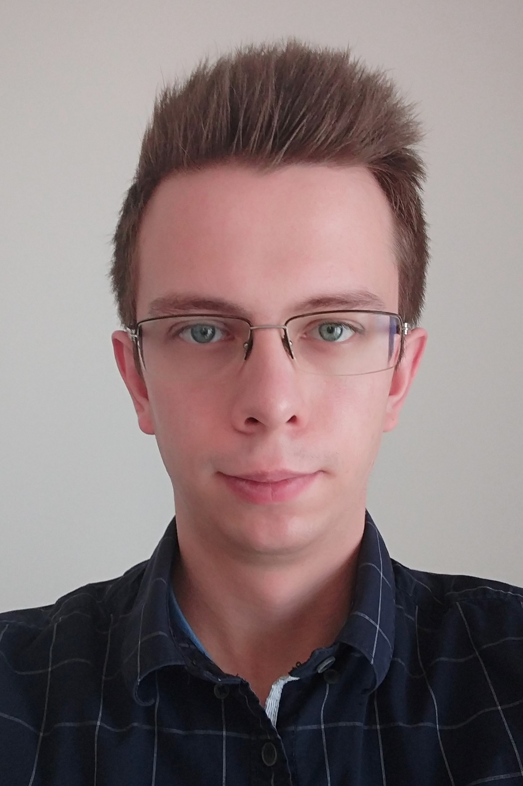

Kamil Rychlewicz
Welcome to my website! Since September 2024, I am a postdoc in the Chair of Arithmetic Geometry in École Polytechnique Fédérale de Lausanne.
Until July 2024, I was a PhD student in Hausel Group in Institute of Science and Technology Austria.
Before that, I finished my Bachelor’s and Master’s in Mathematics at University of Warsaw, with Andrzej Weber as supervisor.
You can contact me under kamil{dot}rychlewicz{at}epfl{dot}ch.
I am interested in various aspects of algebraic geometry, algebraic topology and representation theory. This includes, but is not limited to topological invariants of algebraic varieties with group actions, generalized and equivariant cohomology theories, characteristic classes of singular spaces, toric varieties, geometry of flag, Schubert and quiver varieties.
You can find my research papers below.
Research
K. Rychlewicz, Equivariant cohomology and rings of functions (PhD Thesis), June 2024.
T. Hausel and K. Rychlewicz, Spectrum of equivariant cohomology as a fixed point scheme, arXiv: 2212.11836, accepted.
K. Rychlewicz, The positivity of local equivariant Hirzebruch class for toric varieties, in Bull. London Math. Soc., 53 (2021), 560–574.
K. Rychlewicz, A bound on degrees of primitive elements of toric graph ideals, in Multigraded Algebra and Applications, Springer Proceedings in Mathematics & Statistics, 2018.
Other publications
K. Rychlewicz Wierzchołki, krawędzie, ściany i dalej (in Polish), Delta, 05.2020.
K. Rychlewicz and M. Skałba Najłatwiejsze zadanie? (in Polish), Delta, 05.2016.
Co-editor (with Szymon Kanonowicz) of the brochure Matematyka elementarna: twierdzenia i zadania w uczniowskim wykonaniu (in Polish).
Other activities
Since 2014, I have been a member of the Main Committee and the Problem Selection Committee of Polish Juniors' Mathematical Olympiad. From time to time, I take part in some activities around Polish Mathematical Olympiad. I co-organized a few editions of Náboj mathematical competition and Náboj Junior in Warsaw and Łódź. I organized the online version of Czech-Austrian-Polish-Slovak Mathematical Competition in 2020, and together with my colleagues, I co-organized the competition in ISTA in years 2022-2024.
Address
Institute of Science and Technology Austria
Am Campus 1
3400 Klosterneuburg
Austria
You can find me in the office I21.O3.116, on the third floor in Office Building West (I21).